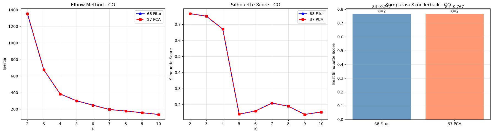
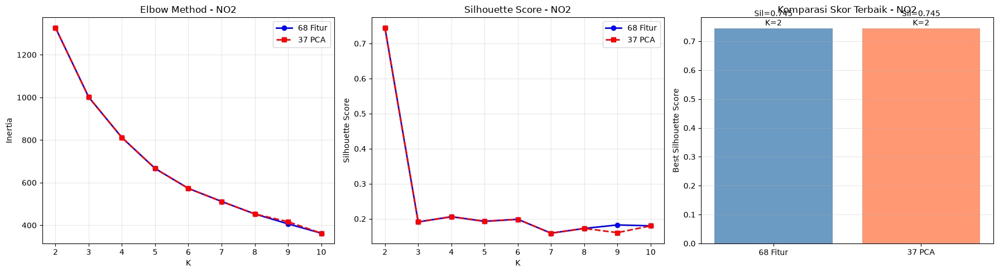
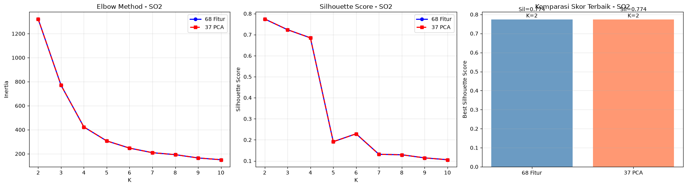
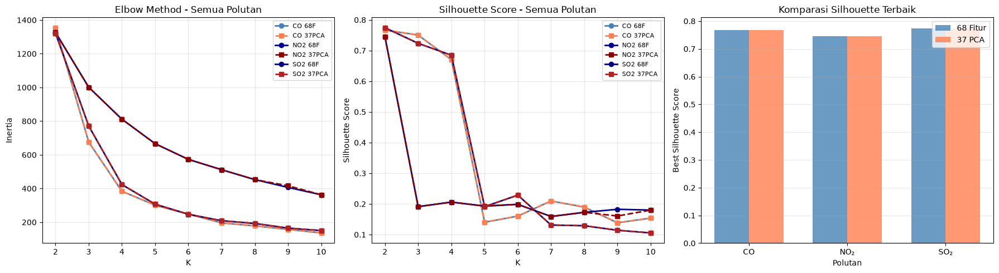

5.3 Komparasi dan Kesimpulan#
Notebook ini mengkomparasi hasil clustering dari dua skenario untuk masing-masing polutan (CO, NO₂, SO₂):
Skenario 1: 68 fitur asli (tanpa reduksi dimensi)
Skenario 2: 37 fitur PCA (dengan reduksi dimensi)
Tujuan: menentukan skenario mana yang menghasilkan clustering lebih representatif dan menafsirkan karakteristik spasial polutan.
import pandas as pd
import numpy as np
import matplotlib.pyplot as plt
from sklearn.cluster import KMeans
from sklearn.metrics import silhouette_score
from sklearn.preprocessing import StandardScaler
from sklearn.decomposition import PCA
from sklearn.impute import SimpleImputer
import warnings
warnings.filterwarnings('ignore')
plt.rcParams['figure.dpi'] = 100
plt.rcParams['font.size'] = 10
POLLUTANTS = ['CO', 'NO2', 'SO2']
DATA_DIR = '../data/downloads/ekstraksi fitur'
META_COLS = ['id', 'nama', 'daerah']
K_range = range(2, 11)
5.3.1 Muat Ulang Data & Jalankan Kedua Skenario#
all_results = []
n_samples = None
for p in POLLUTANTS:
df = pd.read_csv(f'{DATA_DIR}/ekstraksi_fitur_{p.lower()}.csv')
X = df.drop(columns=META_COLS).values
# Handle NaN values with median imputation
nan_count = np.isnan(X).sum()
if nan_count > 0:
print(f'{p}: Ditemukan {nan_count} nilai NaN, melakukan imputasi median...')
imputer = SimpleImputer(strategy='median')
X = imputer.fit_transform(X)
if n_samples is None:
n_samples = X.shape[0]
scaler = StandardScaler()
X_scaled = scaler.fit_transform(X)
# Coba load file PCA dengan berbagai kemungkinan nama
target_n_components = min(37, n_samples)
loaded = False
for n_comp in [37, target_n_components, 35]:
try:
df_pca = pd.read_csv(f'{DATA_DIR}/pca_results/jabon_pca_{n_comp}fitur_{p.lower()}.csv')
X_pca = df_pca.drop(columns=META_COLS).values
loaded = True
break
except FileNotFoundError:
continue
if not loaded:
pca_temp = PCA(n_components=target_n_components)
X_pca = pca_temp.fit_transform(X_scaled)
for k in K_range:
km1 = KMeans(n_clusters=k, random_state=42, n_init=10)
l1 = km1.fit_predict(X_scaled)
sil1 = silhouette_score(X_scaled, l1)
km2 = KMeans(n_clusters=k, random_state=42, n_init=10)
l2 = km2.fit_predict(X_pca)
sil2 = silhouette_score(X_pca, l2)
all_results.append({
'Polutan': p, 'K': k,
'Inertia_68': km1.inertia_, 'Silhouette_68': sil1,
'Inertia_PCA': km2.inertia_, 'Silhouette_PCA': sil2,
})
df_results = pd.DataFrame(all_results)
df_results.head(20)
CO: Ditemukan 24 nilai NaN, melakukan imputasi median...
SO2: Ditemukan 24 nilai NaN, melakukan imputasi median...
| Polutan | K | Inertia_68 | Silhouette_68 | Inertia_PCA | Silhouette_PCA | |
|---|---|---|---|---|---|---|
| 0 | CO | 2 | 1354.500128 | 0.766684 | 1354.500128 | 0.766684 |
| 1 | CO | 3 | 675.654881 | 0.750558 | 675.654881 | 0.750558 |
| 2 | CO | 4 | 383.623231 | 0.670221 | 383.623231 | 0.670221 |
| 3 | CO | 5 | 301.022488 | 0.140355 | 301.022488 | 0.140355 |
| 4 | CO | 6 | 248.523363 | 0.160333 | 248.523363 | 0.160333 |
| 5 | CO | 7 | 195.857247 | 0.209612 | 195.857247 | 0.209612 |
| 6 | CO | 8 | 178.051911 | 0.189726 | 178.051911 | 0.189726 |
| 7 | CO | 9 | 157.201477 | 0.138523 | 157.201477 | 0.138523 |
| 8 | CO | 10 | 136.271104 | 0.153787 | 136.271104 | 0.153787 |
| 9 | NO2 | 2 | 1326.816402 | 0.745037 | 1326.816402 | 0.745037 |
| 10 | NO2 | 3 | 1001.178864 | 0.191117 | 1001.178864 | 0.191117 |
| 11 | NO2 | 4 | 811.392752 | 0.206018 | 811.392752 | 0.206018 |
| 12 | NO2 | 5 | 666.178029 | 0.192885 | 666.178029 | 0.192885 |
| 13 | NO2 | 6 | 572.954226 | 0.198658 | 572.954226 | 0.198658 |
| 14 | NO2 | 7 | 511.692130 | 0.159076 | 511.692130 | 0.159076 |
| 15 | NO2 | 8 | 452.990447 | 0.172611 | 452.990447 | 0.172611 |
| 16 | NO2 | 9 | 406.453427 | 0.182532 | 416.434987 | 0.160610 |
| 17 | NO2 | 10 | 362.833997 | 0.180002 | 362.833997 | 0.180002 |
| 18 | SO2 | 2 | 1321.987176 | 0.774409 | 1321.987176 | 0.774409 |
| 19 | SO2 | 3 | 771.140187 | 0.723475 | 771.140187 | 0.723475 |
5.3.2 Visualisasi Komparasi — Per Polutan#
for p in POLLUTANTS:
df_p = df_results[df_results['Polutan'] == p]
fig, axes = plt.subplots(1, 3, figsize=(18, 5))
axes[0].plot(df_p['K'], df_p['Inertia_68'], 'bo-', label='68 Fitur', linewidth=2)
axes[0].plot(df_p['K'], df_p['Inertia_PCA'], 'rs--', label='37 PCA', linewidth=2)
axes[0].set_xlabel('K')
axes[0].set_ylabel('Inertia')
axes[0].set_title(f'Elbow Method - {p}')
axes[0].legend()
axes[0].grid(True, alpha=0.3)
axes[1].plot(df_p['K'], df_p['Silhouette_68'], 'bo-', label='68 Fitur', linewidth=2)
axes[1].plot(df_p['K'], df_p['Silhouette_PCA'], 'rs--', label='37 PCA', linewidth=2)
axes[1].set_xlabel('K')
axes[1].set_ylabel('Silhouette Score')
axes[1].set_title(f'Silhouette Score - {p}')
axes[1].legend()
axes[1].grid(True, alpha=0.3)
best_68 = df_p.loc[df_p['Silhouette_68'].idxmax()]
best_pca = df_p.loc[df_p['Silhouette_PCA'].idxmax()]
bars = axes[2].bar(['68 Fitur', '37 PCA'],
[best_68['Silhouette_68'], best_pca['Silhouette_PCA']],
color=['steelblue', 'coral'], alpha=0.8)
axes[2].set_ylabel('Best Silhouette Score')
axes[2].set_title(f'Komparasi Skor Terbaik - {p}')
for bar, val, k in zip(bars,
[best_68['Silhouette_68'], best_pca['Silhouette_PCA']],
[best_68['K'], best_pca['K']]):
axes[2].text(bar.get_x() + bar.get_width()/2, bar.get_height() + 0.01,
f'Sil={val:.3f}\nK={int(k)}', ha='center', fontsize=10)
axes[2].grid(True, alpha=0.3, axis='y')
plt.tight_layout()
plt.savefig(f'../data/images/clustering/{p.lower()}/fig_{p.lower()}_comparison.png', dpi=150, bbox_inches='tight')
plt.show()



5.3.3 Tabel Ringkasan Akhir#
rows_summary = []
for p in POLLUTANTS:
df_p = df_results[df_results['Polutan'] == p]
best_68 = df_p.loc[df_p['Silhouette_68'].idxmax()]
best_pca = df_p.loc[df_p['Silhouette_PCA'].idxmax()]
rows_summary.append({
'Polutan': p, 'Skenario': '1 (68 Fitur)', 'Fitur': 68,
'K Terbaik': int(best_68['K']),
'Silhouette Score': round(best_68['Silhouette_68'], 4),
'Inertia': round(best_68['Inertia_68'], 2)
})
rows_summary.append({
'Polutan': p, 'Skenario': '2 (37 PCA)', 'Fitur': 37,
'K Terbaik': int(best_pca['K']),
'Silhouette Score': round(best_pca['Silhouette_PCA'], 4),
'Inertia': round(best_pca['Inertia_PCA'], 2)
})
df_ringkasan = pd.DataFrame(rows_summary)
df_ringkasan
| Polutan | Skenario | Fitur | K Terbaik | Silhouette Score | Inertia | |
|---|---|---|---|---|---|---|
| 0 | CO | 1 (68 Fitur) | 68 | 2 | 0.7667 | 1354.50 |
| 1 | CO | 2 (37 PCA) | 37 | 2 | 0.7667 | 1354.50 |
| 2 | NO2 | 1 (68 Fitur) | 68 | 2 | 0.7450 | 1326.82 |
| 3 | NO2 | 2 (37 PCA) | 37 | 2 | 0.7450 | 1326.82 |
| 4 | SO2 | 1 (68 Fitur) | 68 | 2 | 0.7744 | 1321.99 |
| 5 | SO2 | 2 (37 PCA) | 37 | 2 | 0.7744 | 1321.99 |
5.3.4 Visualisasi Komparasi Antar Polutan#
fig, axes = plt.subplots(1, 3, figsize=(18, 5))
colors_68 = ['steelblue', 'darkblue', 'navy']
colors_pca = ['coral', 'darkred', 'firebrick']
for i, p in enumerate(POLLUTANTS):
df_p = df_results[df_results['Polutan'] == p]
axes[0].plot(df_p['K'], df_p['Inertia_68'], 'o-', label=f'{p} 68F',
color=colors_68[i], linewidth=2)
axes[0].plot(df_p['K'], df_p['Inertia_PCA'], 's--', label=f'{p} 37PCA',
color=colors_pca[i], linewidth=2)
axes[1].plot(df_p['K'], df_p['Silhouette_68'], 'o-', label=f'{p} 68F',
color=colors_68[i], linewidth=2)
axes[1].plot(df_p['K'], df_p['Silhouette_PCA'], 's--', label=f'{p} 37PCA',
color=colors_pca[i], linewidth=2)
axes[0].set_xlabel('K')
axes[0].set_ylabel('Inertia')
axes[0].set_title('Elbow Method - Semua Polutan')
axes[0].legend(fontsize=8)
axes[0].grid(True, alpha=0.3)
axes[1].set_xlabel('K')
axes[1].set_ylabel('Silhouette Score')
axes[1].set_title('Silhouette Score - Semua Polutan')
axes[1].legend(fontsize=8)
axes[1].grid(True, alpha=0.3)
# Bar chart komparasi
x = np.arange(len(POLLUTANTS))
width = 0.35
best_sil_68 = [df_results[(df_results['Polutan']==p)]['Silhouette_68'].max() for p in POLLUTANTS]
best_sil_pca = [df_results[(df_results['Polutan']==p)]['Silhouette_PCA'].max() for p in POLLUTANTS]
axes[2].bar(x - width/2, best_sil_68, width, label='68 Fitur', color='steelblue', alpha=0.8)
axes[2].bar(x + width/2, best_sil_pca, width, label='37 PCA', color='coral', alpha=0.8)
axes[2].set_xlabel('Polutan')
axes[2].set_ylabel('Best Silhouette Score')
axes[2].set_title('Komparasi Silhouette Terbaik')
axes[2].set_xticks(x)
axes[2].set_xticklabels(['CO', 'NO₂', 'SO₂'])
axes[2].legend()
axes[2].grid(True, alpha=0.3, axis='y')
plt.tight_layout()
plt.savefig('../data/images/clustering/fig_comparison_all_pollutants.png', dpi=150, bbox_inches='tight')
plt.show()

5.3.5 Analisis Spasial — Karakteristik Cluster per Daerah#
Analisis ini menafsirkan karakteristik cluster berdasarkan nama daerah pada dataset gabungan kelas.
for p in POLLUTANTS:
print(f'\n{"="*60}')
print(f'ANALISIS SPASIAL: {p}')
print(f'{"="*60}')
# Load data lengkap (dengan metadata)
df = pd.read_csv(f'{DATA_DIR}/ekstraksi_fitur_{p.lower()}.csv')
X = df.drop(columns=META_COLS).values
# Handle NaN values with median imputation
nan_count = np.isnan(X).sum()
if nan_count > 0:
imputer = SimpleImputer(strategy='median')
X = imputer.fit_transform(X)
n_samples = X.shape[0]
target_n_components = min(37, n_samples)
scaler = StandardScaler()
X_scaled = scaler.fit_transform(X)
# Coba load file PCA dengan berbagai kemungkinan nama
loaded = False
for n_comp in [37, target_n_components, 35]:
try:
df_pca = pd.read_csv(f'{DATA_DIR}/pca_results/jabon_pca_{n_comp}fitur_{p.lower()}.csv')
X_pca = df_pca.drop(columns=META_COLS).values
loaded = True
break
except FileNotFoundError:
continue
if not loaded:
pca_temp = PCA(n_components=target_n_components)
X_pca = pca_temp.fit_transform(X_scaled)
# Cari K terbaik
df_p = df_results[df_results['Polutan'] == p]
best_k_68 = int(df_p.loc[df_p['Silhouette_68'].idxmax()]['K'])
best_k_pca = int(df_p.loc[df_p['Silhouette_PCA'].idxmax()]['K'])
# Clustering
km_68 = KMeans(n_clusters=best_k_68, random_state=42, n_init=10)
labels_68 = km_68.fit_predict(X_scaled)
km_pca = KMeans(n_clusters=best_k_pca, random_state=42, n_init=10)
labels_pca = km_pca.fit_predict(X_pca)
# Tambahkan label ke dataframe
df['Cluster_68'] = labels_68
df['Cluster_PCA'] = labels_pca
print(f'\nK terbaik: 68F={best_k_68}, PCA={best_k_pca}')
print(f'\nDistribusi cluster per daerah (Skenario 1 - 68 Fitur):')
for c in range(best_k_68):
daerah_in_cluster = df[df['Cluster_68'] == c]['daerah'].tolist()
print(f' Cluster {c}: {daerah_in_cluster}')
print(f'\nDistribusi cluster per daerah (Skenario 2 - PCA):')
for c in range(best_k_pca):
daerah_in_cluster = df[df['Cluster_PCA'] == c]['daerah'].tolist()
print(f' Cluster {c}: {daerah_in_cluster}')
============================================================
ANALISIS SPASIAL: CO
============================================================
K terbaik: 68F=2, PCA=2
Distribusi cluster per daerah (Skenario 1 - 68 Fitur):
Cluster 0: ['Kerek, Tuban', 'Menganti Gresik', 'Manyar, Gresik', 'Widang, Tuban', 'Sreseh, Sampang', 'Cerme, Gresik', 'Nunukan', 'Pilangkenceng, Madiun', 'Tikala, Manado', 'Labang, Bangkalan', 'Kec. Kalianget, Sumenep', 'Paciran, Lamongan', 'Waru, Pamekasan', 'Gresik Kota, Gresik', 'sambeng lamongan', 'Widodaren, Ngawi', 'Kertosono, Ngajuk', 'Kedungpring Lamongan', 'Bandung, Jogoroto, Jombang', 'Socah, Bangkalan', 'Tanah Merah, Bangkalan', 'Kamal, Bangkalan', 'Banyu Ajuh, Perumnas, Kamal', 'Wonokromo, Surabaya', 'Dukun, Gresik', 'Kwanyar, Bangkalan', 'jabon , Sidoarjo', 'Kota Sumenep, Sumenep', 'Baron Nganjuk', 'Kwanyar, Bangkalan', 'Asemrowo, Surabaya', 'Warudoyong, Kota Sukabumi', 'Kamal', 'Kec. Bangkalan, Kab. Bangkalan']
Cluster 1: ['Kamal, Bangkalan']
Distribusi cluster per daerah (Skenario 2 - PCA):
Cluster 0: ['Kerek, Tuban', 'Menganti Gresik', 'Manyar, Gresik', 'Widang, Tuban', 'Sreseh, Sampang', 'Cerme, Gresik', 'Nunukan', 'Pilangkenceng, Madiun', 'Tikala, Manado', 'Labang, Bangkalan', 'Kec. Kalianget, Sumenep', 'Paciran, Lamongan', 'Waru, Pamekasan', 'Gresik Kota, Gresik', 'sambeng lamongan', 'Widodaren, Ngawi', 'Kertosono, Ngajuk', 'Kedungpring Lamongan', 'Bandung, Jogoroto, Jombang', 'Socah, Bangkalan', 'Tanah Merah, Bangkalan', 'Kamal, Bangkalan', 'Banyu Ajuh, Perumnas, Kamal', 'Wonokromo, Surabaya', 'Dukun, Gresik', 'Kwanyar, Bangkalan', 'jabon , Sidoarjo', 'Kota Sumenep, Sumenep', 'Baron Nganjuk', 'Kwanyar, Bangkalan', 'Asemrowo, Surabaya', 'Warudoyong, Kota Sukabumi', 'Kamal', 'Kec. Bangkalan, Kab. Bangkalan']
Cluster 1: ['Kamal, Bangkalan']
============================================================
ANALISIS SPASIAL: NO2
============================================================
K terbaik: 68F=2, PCA=2
Distribusi cluster per daerah (Skenario 1 - 68 Fitur):
Cluster 0: ['Manyar', 'Kedungpring Lamongan', 'Kamal, Bangkalan', 'sambeng lamongan', 'Gresik Kota, Gresik', 'Waru, Pamekasan', 'Bangkalan Kota,Bangkalan', 'Nunukan', 'Kamal, Bangkalan', 'Cerme, Gresik', 'Pilangkenceng, Madiun', 'Kota Sumenep, Sumenep', 'Asemrowo, Surabaya', 'Sreseh, Sampang', 'Wonoayu', 'Wonokromo, Surabaya', 'Banyu Ajuh, Perumnas, Kamal', 'Menganti Gresik', 'Labang, Bangkalan', 'Kec. Kalianget, Sumenep', 'Kec. Bangkalan, Kab. Bangkalan', 'Kerek, Tuban', 'Widang, Tuban', 'Amanuban Selatan', 'Tikala, Manado', 'Paciran, Lamongan', 'Widodaren, Ngawi', 'Socah, Bangkalan', 'Tanah Merah, Bangkalan', 'Dukun, Gresik', 'Kwanyar, Bangkalan', 'jabon , Sidoarjo', 'Baron Nganjuk', 'Kwanyar, Bangkalan', 'Kertosono, Ngajuk', 'Warudoyong, Kota Sukabumi']
Cluster 1: ['Kamal']
Distribusi cluster per daerah (Skenario 2 - PCA):
Cluster 0: ['Manyar', 'Kedungpring Lamongan', 'Kamal, Bangkalan', 'sambeng lamongan', 'Gresik Kota, Gresik', 'Waru, Pamekasan', 'Bangkalan Kota,Bangkalan', 'Nunukan', 'Kamal, Bangkalan', 'Cerme, Gresik', 'Pilangkenceng, Madiun', 'Kota Sumenep, Sumenep', 'Asemrowo, Surabaya', 'Sreseh, Sampang', 'Wonoayu', 'Wonokromo, Surabaya', 'Banyu Ajuh, Perumnas, Kamal', 'Menganti Gresik', 'Labang, Bangkalan', 'Kec. Kalianget, Sumenep', 'Kec. Bangkalan, Kab. Bangkalan', 'Kerek, Tuban', 'Widang, Tuban', 'Amanuban Selatan', 'Tikala, Manado', 'Paciran, Lamongan', 'Widodaren, Ngawi', 'Socah, Bangkalan', 'Tanah Merah, Bangkalan', 'Dukun, Gresik', 'Kwanyar, Bangkalan', 'jabon , Sidoarjo', 'Baron Nganjuk', 'Kwanyar, Bangkalan', 'Kertosono, Ngajuk', 'Warudoyong, Kota Sukabumi']
Cluster 1: ['Kamal']
============================================================
ANALISIS SPASIAL: SO2
============================================================
K terbaik: 68F=2, PCA=2
Distribusi cluster per daerah (Skenario 1 - 68 Fitur):
Cluster 0: ['Kerek, Tuban', 'Menganti Gresik', 'Manyar, Gresik', 'Widang, Tuban', 'Sreseh, Sampang', 'Cerme, Gresik', 'Nunukan', 'Pilangkenceng, Madiun', 'Tikala, Manado', 'Kec. Kalianget, Sumenep', 'Labang, Bangkalan', 'Paciran, Lamongan', 'Waru, Pamekasan', 'Gresik Kota, Gresik', 'sambeng lamongan', 'Widodaren, Ngawi', 'Kertosono, Ngajuk', 'Kedungpring Lamongan', 'Bandung, Jogoroto, Jombang', 'Socah, Bangkalan', 'Tanah Merah, Bangkalan', 'Kamal, Bangkalan', 'Banyu Ajuh, Perumnas, Kamal', 'Wonokromo, Surabaya', 'Dukun, Gresik', 'Kwanyar, Bangkalan', 'jabon , Sidoarjo', 'Kota Sumenep, Sumenep', 'Baron Nganjuk', 'Kwanyar, Bangkalan', 'Asemrowo, Surabaya', 'Warudoyong, Kota Sukabumi', 'Kamal', 'Kec. Bangkalan, Kab. Bangkalan']
Cluster 1: ['Kamal, Bangkalan']
Distribusi cluster per daerah (Skenario 2 - PCA):
Cluster 0: ['Kerek, Tuban', 'Menganti Gresik', 'Manyar, Gresik', 'Widang, Tuban', 'Sreseh, Sampang', 'Cerme, Gresik', 'Nunukan', 'Pilangkenceng, Madiun', 'Tikala, Manado', 'Kec. Kalianget, Sumenep', 'Labang, Bangkalan', 'Paciran, Lamongan', 'Waru, Pamekasan', 'Gresik Kota, Gresik', 'sambeng lamongan', 'Widodaren, Ngawi', 'Kertosono, Ngajuk', 'Kedungpring Lamongan', 'Bandung, Jogoroto, Jombang', 'Socah, Bangkalan', 'Tanah Merah, Bangkalan', 'Kamal, Bangkalan', 'Banyu Ajuh, Perumnas, Kamal', 'Wonokromo, Surabaya', 'Dukun, Gresik', 'Kwanyar, Bangkalan', 'jabon , Sidoarjo', 'Kota Sumenep, Sumenep', 'Baron Nganjuk', 'Kwanyar, Bangkalan', 'Asemrowo, Surabaya', 'Warudoyong, Kota Sukabumi', 'Kamal', 'Kec. Bangkalan, Kab. Bangkalan']
Cluster 1: ['Kamal, Bangkalan']
5.3.6 Interpretasi dan Kesimpulan#
Temuan Utama#
Silhouette Score: Skenario dengan skor lebih tinggi menunjukkan cluster yang lebih terpisah (separated) dan compact (intra-cluster distance lebih kecil).
Elbow Method: K terbaik ditunjukkan oleh titik elbow — di mana penurunan inertia mulai melambat secara signifikan.
Pengaruh PCA: PCA dapat mengurangi noise dari fitur-fitur yang kurang informatif, sehingga cluster lebih jelas. Namun, PCA juga dapat membuang informasi penting jika komponen yang dibuang masih mengandung sinyal relevan.
Rekomendasi#
Gunakan Skenario 2 (37 PCA) jika Silhouette Score-nya lebih tinggi → PCA efektif mereduksi noise.
Gunakan Skenario 1 (68 Fitur) jika Silhouette Score-nya lebih tinggi → fitur asli lebih representatif.
Dalam konteks analisis polutan, reduksi dimensi membantu mengisolasi sinyal polusi dari variasi noise satelit.
Interpretasi Spasial#
Kecamatan yang berada dalam cluster yang sama memiliki karakteristik polutan serupa — misalnya tingkat paparan rata-rata, pola fluktuasi harian, dan stabilitas konsentrasi yang mirip. Informasi ini berguna untuk:
Pemetaan zona kualitas udara
Penentuan prioritas intervensi lingkungan
Perencanaan kebijakan pengendalian emisi